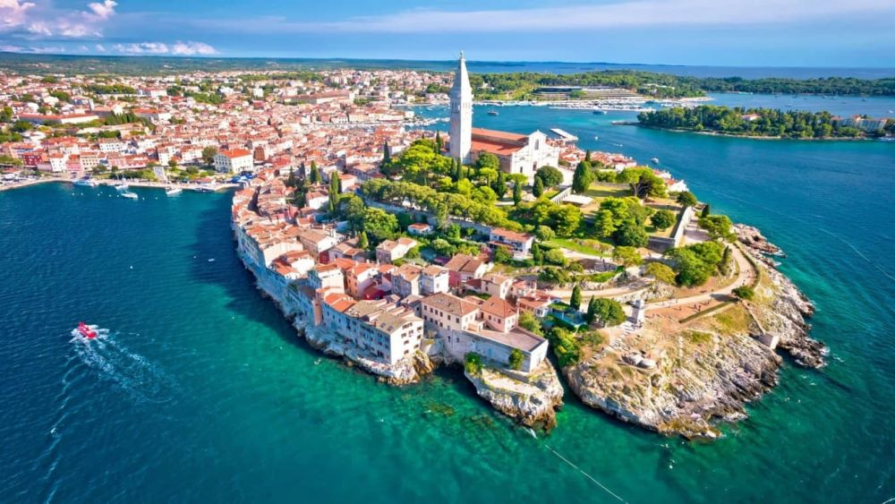

Descoperă orașul Rovinj - O călătorie în Croația
Rovinj este un pitoresc oraș de coastă din Croația, oferind o varietate de atracții interesante pentru vizitatori:
-

Centrul vechi al orașului Rovinj - Arhitectură medievală
Plimbați-vă pe străzile înguste ale centrului vechi și descoperiți clădiri istorice și farmecul arhitectural.
-

Portul din Rovinj - Priveliști maritime
Bucurați-vă de priveliști asupra portului pitoresc și a mării Adriatice.
-

Biserica Sfânta Eufemia din Rovinj - Monument religios
Vizitați această biserică impunătoare care oferă panorame uimitoare asupra orașului și mării.
-

Parcul Zlatni Rt din Rovinj - Relaxare în natură
Explorați acest parc frumos și relaxați-vă în mijlocul naturii și a peisajelor pitorești.
-

Plajele din Rovinj - Relaxare pe plajă
Bucurați-vă de plajele frumoase și apei cristaline din Rovinj.
Concluzii
Rovinj oferă o combinație de istorie, arhitectură, peisaje maritime și relaxare pe plajă pentru vizitatori.